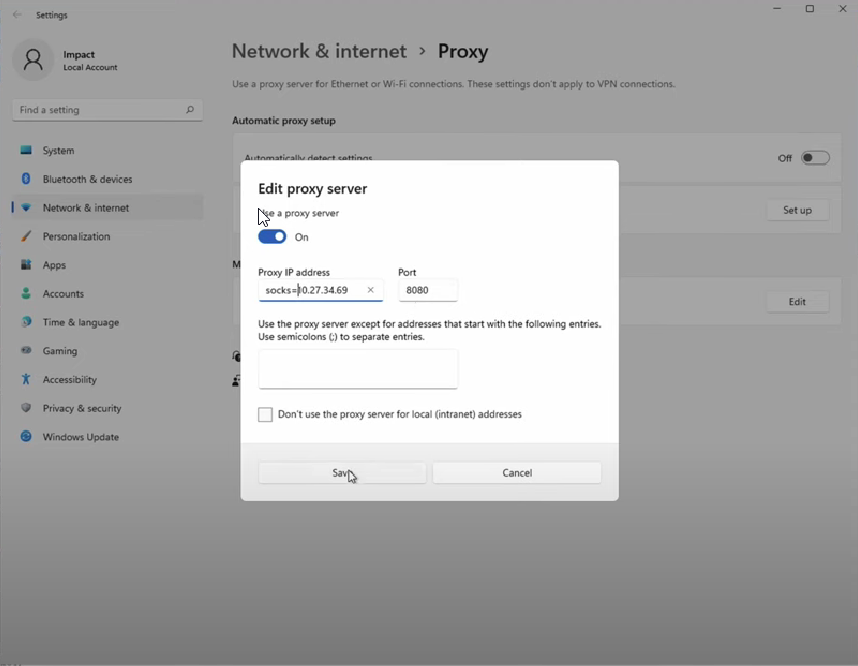

you should already have gathered know open ports at this time
==============================================================================================================
The idea we are going to pivotwithin the environment using a socks proxyto view internal web servers
*if you're lost* we're just tunneling bro
We need to establish a proxy on the main teamserver <rdp in to add a windows proxy>- - this is http proxy and pivoting using the browser

Proxy IP address> socks=<teamserverIP>
Port> 8080
you might need to change sleep setting, if its not fast enough you can get timed out
- ===================
- | within Cobalt Strike |
- ===================
Call socks command and specify proxy- > socks 8080
- -view within Proxy Pivotstab

=============================================================================================
You should be now be able to access internal web servers via the teamserver wb browser
=============================================================================================